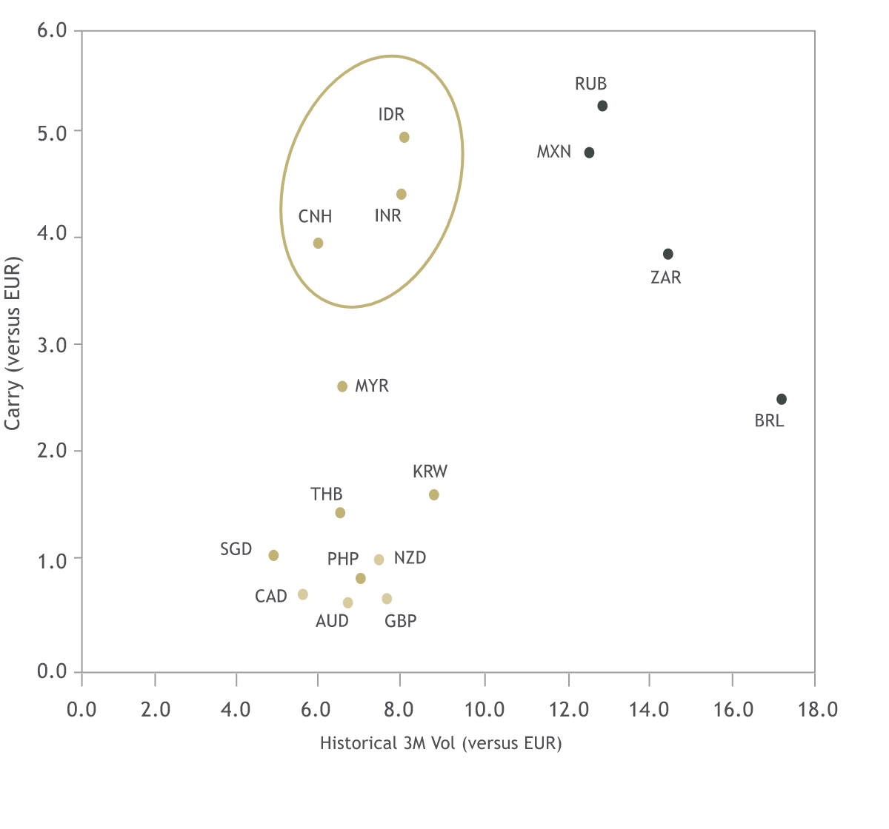

Focus on Asian currencies with higher carry per unit volatility
{kind=link}
Sources: Bloomberg, Maybank FX Research & Strategy I November 2020
Note: Carry is proxied by differentials in 3-month rates
While the AUD remains vulnerable to the pandemic and global sentiment swings, the currency could benefit from the global cyclical recovery in the medium-term. Barring a drastic deterioration in Australia-China relations, the AUD could ride on a stronger China that demands resources from Australia. Better COVID-19 management at home also gives Australia an advantage once international borders start reopening. We expect the Reserve Bank of Australia (RBA) to keep its monetary policy status quo for 2021 unless the COVID-19 situation unexpectedly deteriorates in Australia.
China’s early emergence from the pandemic has given it a head-start in the global economic recovery. Consistent macro improvements continue to underpin the RMB along with expected passive inflows from its inclusion into the FTSE World Government Bond Index (WGBI). China’s reversion to prioritise financial stability over growth has also led to an uplift on its rates, giving the RMB an added carry advantage.
The RMB had been relatively stable until the U.S.-China trade war came along, which led to more volatile price movements for the currency. Nevertheless, a potentially more benign geopolitical landscape, together with a “Peaceful” China emphasising domestic economy expansion, should lend support for the RMB moving forward.
The SGD, like most Asian currencies, saw a sharp bout of depreciation at the onset of COVID-19 in 1Q20. However, the currency has been on a recovery path since. Emerging from the pandemic, the robust fiscal support will likely help cap the macro toll in the labour and corporate landscapes, even as the domestic economy is only gradually recovering. Abundant fiscal reserves can help act as a key sentiment anchor. As such, the SGD Nominal Effective Exchange Rate could remain mostly on the stronger side of the policy band in 2021.
The relative resilience of the MYR remains underpinned by stabilising oil prices and the expected stimulus measures to lift consumer spending and investments. Risks that could undermine the currency include domestic political uncertainty and potential drags to the economy from intermittent bouts of COVID-19 induced movement restrictions. Nevertheless, any knee-jerk softening associated with these risk factors may not be sustained should macro fundamentals remain intact.
The IDR remains susceptible to external risk factors such as U.S.-China tensions. But the eventual return to a low volatility and low-for-longer global rates environment could anchor demand for carry-linked trades again in 2021. The IDR is a key beneficiary of such carry trades, contingent on the successful COVID-19 vaccine development and distribution in the country. Meanwhile, the recent Omnibus law also has the potential to attract more investment flows into Indonesia, assuming the associated labour union discontent can be assuaged.
While India was not the first to get a handle on COVID-19, there are some signs of improvement at home. Barring no resurgence in infections, the INR could also benefit from a cyclical upturn. However, we would keep a watch on the fragile banking system and its non-performing loans. Inflation is expected to be transitory but the consumer price index has been above the Reserve Bank of India’s target for a tad too long – a key hurdle for the central bank to justify easing policy rates and supporting the economy further.
Sources: Bloomberg, Maybank FX Research & Strategy I November 2020
Note: Carry is proxied by differentials in 3-month rates